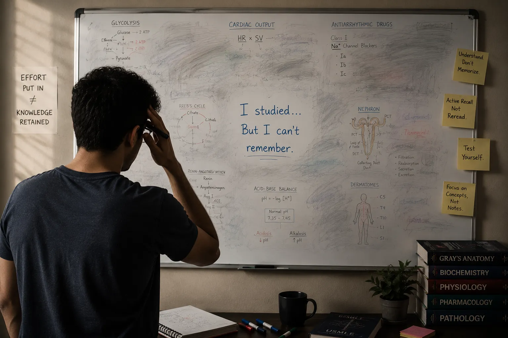
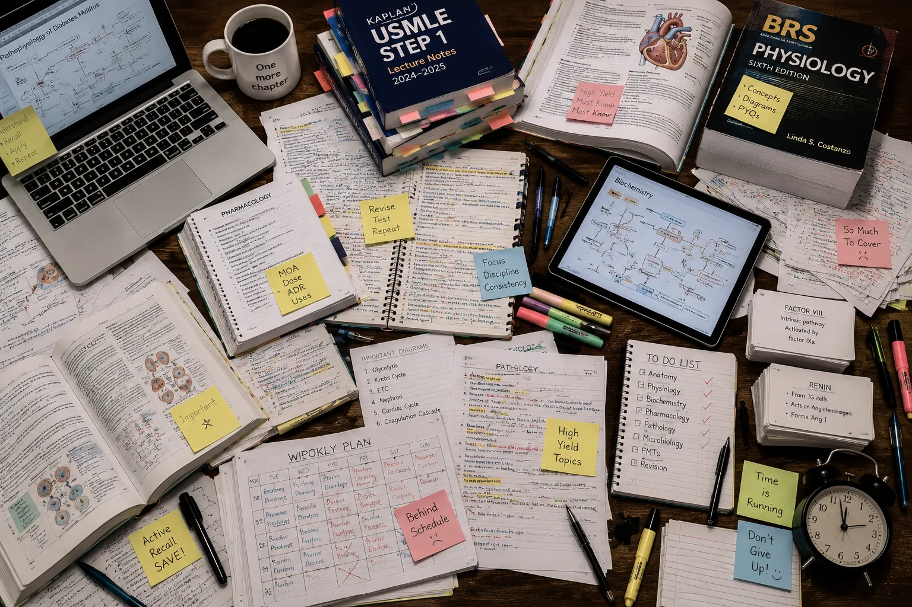
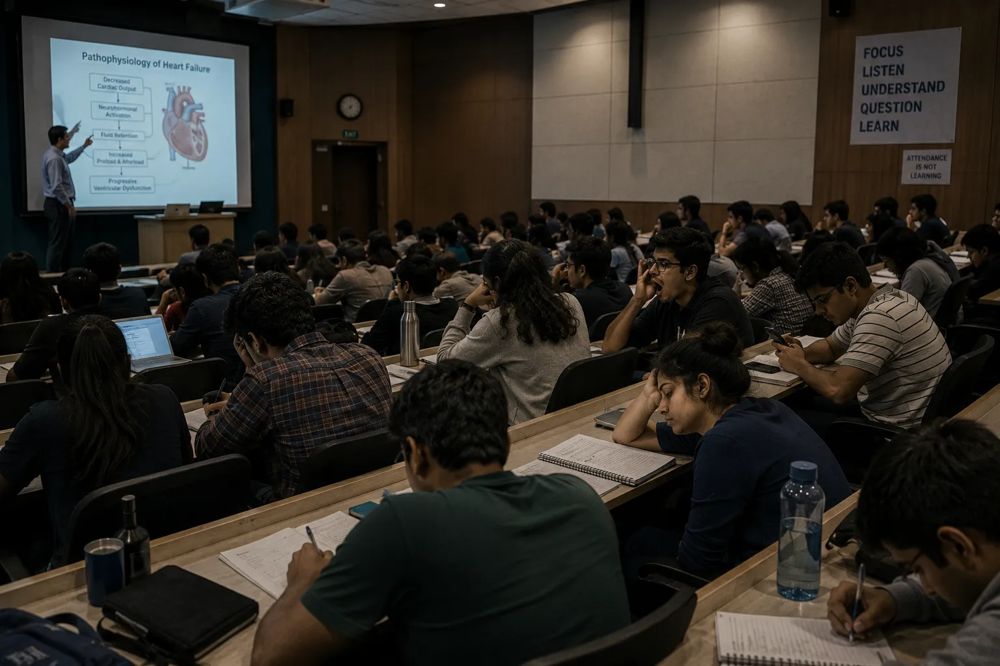
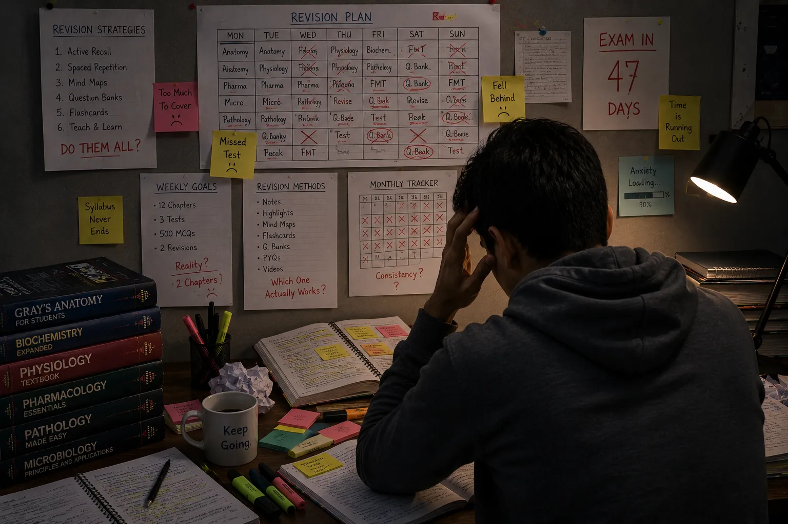

A Comprehensive Study of India's Medical Education Landscape, Market Opportunity, Learning Challenges, and a Neuroscience-Driven Approach to Exam Preparation.
Understanding the Opportunity. Rethinking the Learning Experience.
Figure 1.0 — Focused medical student preparing in library surroundings, establishing the report's research narrative.
Executive Summary
India produces more than 1,00,000 MBBS graduates every year, most of whom prepare for NEET PG to secure a postgraduate seat. Yet with only 40,000–50,000 PG slots available against 2.4–2.5 lakh annual aspirants, nearly 70% fail to secure a seat — driving multi-year preparation cycles.
The financial stakes are high. Around 70% of students attend private colleges, where MBBS tuition ranges from ₹60 lakh to ₹1 crore. For these graduates, PG specialization is not optional — it is a career and financial imperative. This structural pressure has created a preparation market estimated at ₹2,000–3,000 crore.
Yet existing platforms largely rely on passive, long-form lectures — a format that conflicts with how the brain actually retains information. Research shows attention drops significantly after 10–15 minutes of uninterrupted instruction. NeuroCrack addresses this gap with concept-driven lectures, active recall, and spaced repetition — engineering preparation for durable retention, not just content volume.
Growing Market
The NEET PG preparation ecosystem is expanding rapidly, driven by the expansion of undergraduate MBBS seats. This creates a large, highly motivated, and commercially active learner base with high willingness to pay for premium preparation resources.
Existing Gap
Conventional preparation tools focus heavily on passive video instruction and bulk question banks. This mismatch with natural cognitive processing leads to poor memory retention, cognitive overload, and diminishing learning efficiency.
NeuroCrack Solution
A neuroscience-informed learning framework that optimizes cognitive load, integrates active recall practice, and schedules automated spaced repetition, systematically converting study effort into durable clinical knowledge.
Strategic Opportunity
By offering a product centered on verified learning outcomes rather than passive content volume, NeuroCrack is positioned to achieve strong user acquisition, high customer lifetime value (LTV), and rapid market differentiation.
Key Takeaways
MBBS graduates are growing rapidly, creating a large, highly motivated candidate base.
Conventional preparation tools focus heavily on passive content, leading to cognitive fatigue.
NeuroCrack shifts the value proposition from simple content volume to verified student success.
The NeuroCrack Opportunity
Our strategic value chain aligns market drivers, learning science, and technology to maximize educational outcomes and build a sustainable competitive advantage.
The NeuroCrack Opportunity Framework
Strategic value chain showing the progression from market, science, and tech drivers to long-term educational impact.
NeuroCrack Strategic Planning, 2026
Figure 0.1 — The NeuroCrack Opportunity Framework · Strategic value chain showing the progression from market, science, and tech drivers to long-term educational impact.
Key Takeaways
Pedagogical alignment with technology is the key differentiator in a crowded market.
Optimized study experiences directly yield superior clinical retention and exam success.
Redefines the business opportunity by delivering verified student outcomes.
An examination of India's medical education ecosystem — the growing MBBS graduate pipeline, the mounting competition for postgraduate seats, and the market dynamics that make this an exceptional commercial opportunity for the right digital preparation platform.
Guiding Question
How has India's medical education landscape evolved, and what opportunities has this created for postgraduate learning?
Chapter01
The Indian Medical Education Landscape
An overview of India's medical education expansion, highlighting the growing MBBS graduate pipeline, high educational costs, public-private disparities, and the resulting PG specialization bottleneck.
01 / 04
Growth of Medical Education
India's undergraduate medical seats have expanded rapidly over the past decade. This massive increase in MBBS graduates has created a direct funnel compounding the competition for postgraduate specialization.
Figure 1.1 — MBBS Graduate Growth (2015–2035)
Projections showing MBBS seats and graduate output expansion. National database aggregates.
Source: Gov.India data 2026 documents
Figure 1.1 — Capacity Growth Trend · Projections showing MBBS seats and graduate output growth from 54,000 in 2015 to 170,000 by 2035 (an increase of about 214%).
Core Observation
MBBS capacity is projected to reach 1.70 lakh annual seats by 2035 — a 214% increase from 2015.
Every additional MBBS graduate becomes a potential NEET PG aspirant, compounding the preparation demand.
This pipeline growth is structural and long-term, not cyclical.
02 / 04
Cost of Medical Education
Pursuing medical education in India represents a major financial investment. The massive cost disparity between public and private MBBS seats turns postgraduate specialization into a financial recovery imperative.
MBBS Educational Investment — Public vs. Private, 2024
Average total tuition fees for the 4.5-year MBBS course, excluding living expenses.
NMC Tuition Fee Survey, 2024
Government College
₹2.5L
Average total MBBS tuition across all government medical institutions
30×higher
Private College
₹75L
MBBS fees in private colleges range from ₹60 Lakh to ₹1 Crore nationwide
Figure 1.2 — Cost Disparity · With private tuition ranging from ₹60L to ₹1Cr, NEET PG success becomes a financial recovery imperative.
Business Impact
Private medical tuition averages ₹75 lakhs total — creating a powerful financial incentive to clear NEET PG.
Around 70% of all graduates carry this debt burden, making outcome-focused preparation non-negotiable.
High motivation, clear ROI expectations, and willingness to pay define this learner profile.
Who Is Preparing for NEET PG?
The addressable preparation pool spans four student cohorts at distinct stages of the MBBS journey.
Source: Indian Medical Assc. Data 2025
03
3rd Year MBBS
Early starters building conceptual foundations alongside clinical coursework
~1.2 – 1.4 Lakh
04
Final Year
High-intensity preparation phase with peak subject load and exam proximity
~1.1 – 1.3 Lakh
INT
Internship
Active interns balancing clinical duties with full-time NEET PG revision
~1.0 – 1.2 Lakh
↺
Repeat Aspirants
High-intent repeaters with prior attempt experience and peak willingness to pay
~1.2 – 1.5 Lakh
Total Active Preparation Pool4.5 – 5.5 Lakhactive NEET PG aspirants annually
Figure 1.3 — Preparation Pool · Four-cohort breakdown of the NEET PG aspirant base eligible for digital preparation platforms.
Strategic Insight
The addressable window per student spans 3–4 years, creating strong customer lifetime value potential.
Repeat aspirants (~1.2–1.5 lakh) are the highest-intent, highest-spending cohort in the ecosystem.
A total active pool of 4.5–5.5 lakh candidates represents a large, recurring, captive market.
03 / 04
Government vs. Private Colleges
The institutional landscape is split between government and private sectors. Government seats are highly competitive, while private seats are accessible but carry high financial burdens.
Accessibility: Selective entry via strict national merit
Demand: Highest priority preference for all candidates
Private
Private Sector Colleges
Tuition: ₹50L to ₹1.2Cr total (Heavy financial load)
Seats: ~52,000 national slots (Steadily expanding)
Competition: Moderate to high (Flexible entry paths)
Accessibility: Higher seat accessibility based on budget
Demand: Secondary option when public seats are filled
Key Takeaways
Government seats are affordable but scarce — requiring a rank above the 98th percentile.
Private seats offer broader access but carry tuition costs of ₹50L to ₹1.2 crore.
Both pathways lead to the same NEET PG bottleneck, sustaining consistent preparation demand.
04 / 04
Why Postgraduate Specialization Matters
An MBBS degree is no longer sufficient for a successful medical career in India. Postgraduate specialization is now a critical milestone for clinical practice and professional advancement.
Learning Journey Flow
01
MBBS Admission
02
Medical Education
03
Internship
04
NEET PG Exam
05
Specialization
06
Medical Career
Key Insight: As India's medical education ecosystem continues to expand, postgraduate specialization has evolved from an optional career milestone into a critical pathway for professional advancement. This sustained demand drives one of the country's largest and most competitive entrance examination ecosystems.
Chapter Summary
The rapid expansion of MBBS seats has created a large graduate pipeline facing an acute shortage of postgraduate slots. This structural demand-to-seat imbalance, combined with high private college tuition debt, makes postgraduate specialization a career and financial necessity. The resulting competitive bottleneck establishes a large, motivated, and recurring market for specialized preparation.
Chapter02
The NEET PG Opportunity
An analysis of the NEET PG ecosystem's scale, the rising aspirant count, the seat-demand imbalance, and the resulting market bottleneck.
01 / 03
Growing Demand for NEET PG
NEET PG candidate registration has grown steadily over the past decade. This consistent rise in aspirants creates a highly engaged, recurring preparation ecosystem.
Figure 2.1 — Growing demand for postgraduate medical education reflects increasing specialization aspirations among MBBS graduates across India.
Figure 2.2 — NEET PG Aspirant Growth (2017–2035)
Annual growth of registered medical graduates participating in the postgraduate seat allocation examination.
Source: Indian Medical Assc. Data 2025
Figure 2.2 — Growth Trend Chart · Year-on-year growth of registered candidates projected from 1.25 lakh in 2017 to nearly 4 lakh by 2035 (an increase of about 200%).
Interpretation: Candidate growth is projected to rise steadily to 400,000 by 2035, compounding the demand for outcome-focused prep platforms.
02 / 03
The NEET PG Bottleneck
While MBBS graduation rates rise, postgraduate seat capacity remains constrained. This persistent demand-to-seat gap forces candidates into competitive, multi-year preparation cycles.
Figure 2.3 — The growing competition for postgraduate seats.
The NEET PG Bottleneck Dynamics
Pipeline compression analysis showing candidate volumes against available seats and output gaps.
Source: NBE & NMC Database Aggregates
Figure 2.4 — NEET PG Bottleneck · Mismatch between 240,000 annual aspirants and 50,000 available postgraduate slots.
Interpretation: With 50,000 available seats against 240,000 aspirants, nearly 8 out of 10 doctors do not secure a postgraduate specialization seat each year, leaving ~170,000 candidates to repeat the cycle.
03 / 03
NEET PG vs NEXT Questions
The core difference between the legacy NEET PG exam and the incoming NEXT exam lies in the cognitive depth of their questions. NEET PG primarily tests memory recall of isolated facts, whereas NEXT evaluates clinical reasoning and real-world clinical decision-making.
This transition fundamentally shifts candidate preparation. Under the old NEET PG pattern, students could achieve high marks through rote memorization of textbooks and question banks. Under NEXT, candidates must learn to think like practicing clinicians, synthesizing knowledge across multiple medical disciplines to solve complex patient scenarios.
NEET PG vs NEXT Question Comparison
Structural and cognitive shift from direct recall to multi-layered clinical decision making.
NeuroCrack Content Research, 2026
NEET PG (Before)
“Which enzyme rises first after a heart attack?
(a) Troponin
(b) CK-MB
(c) Myoglobin
(d) LDH”
Focus: Isolated fact memory checking (Did you memorize the marker timeline?)
NEXT (After)
“A 55-year-old man arrives with chest pain since 2 hours. ECG shows changes. His myoglobin is high but troponin is still normal. Should the doctor wait and retest, start treatment immediately, or send him home?”
Focus: Clinical reasoning and real-time patient decision making (Understanding marker kinetics under urgency)
Skill NeededDid you mug it up?Can you think like a doctor?
Figure 2.5 — Question Design Comparison · Heart attack diagnostic marker question styles in NEET PG and NEXT formats.
Why This Matters for NeuroCrack
Most current channels and preparation platforms still teach the legacy "memorize facts" way, leaving a massive gap in the market. By design, NeuroCrack focuses on the "think like a doctor" methodology from day one. This positioning becomes increasingly valuable as the official 2029–2030 NEXT exam rollout approaches.
Chapter Summary
The growing pool of medical graduates combined with stable post-graduate seat limits creates an acute structural bottleneck. This gap between demand and supply converts NEET PG preparation into a long-term, multi-attempt lifecycle, ensuring a large and highly motivated market for digital learning suites.
Chapter03
Market Landscape
An overview of the NEET PG preparation market size, segment dynamics, and revenue distribution across different learning formats.
01 / 03
Market Size
The NEET PG preparation market has evolved into a resilient, high-expenditure education segment. Driven by recurring applicant streams and low seat ratios, candidates invest heavily in digital suites, test series, and mentorship.
NEET PG Preparation Market Overview, 2024
A high-level snapshot of the active candidate pool, annual expenditures, and growth dynamics.
Source: Indian Medical Assc. Data 2025
₹2,000–3,000 CrTotal Market SizeAnnual expenditure on prep programs, digital suites, test series, and offline coaching.
4–6 LakhActive Learner BaseTotal unique active preparation candidates studying across all platforms annually.
2.4–2.5 LakhAnnual Exam AspirantsUnique registered doctors sitting for the seat allocation examination each year.
~70%Repeat Candidate RatioProportion of aspirants who fail to secure a seat and must re-enter the preparation cycle.
Figure 3.1 — Market Size Dashboard · Metric snapshot of the NEET PG preparation market commercial opportunity.
Interpretation: Large candidate volumes and a ₹2,000–3,000 Crore valuation highlight a highly lucrative, high-expenditure education segment.
02 / 03
Market Segments
The preparation landscape spans classroom coaching, self-paced digital suites, test series, and question banks. Modern aspirants typically adopt a blended prep model, combining multiple resources.
The NEET PG Integrated Prep Ecosystem
Hierarchical mapping of core prep channels and their complementary learning tools.
Industry Analysis, 2024
Figure 3.2 — Market Segment Breakdown · Interconnected learning formats within the NEET PG preparation ecosystem.
Interpretation: Candidate preparation is multi-channeled, highlighting opportunities for platforms that integrate assessment, video content, and revision.
03 / 03
Revenue Distribution
Market revenue is distributed across offline coaching, digital learning, and test prep assessments. Evolving student preferences continue to shift revenue towards flexible digital models.
Estimated Revenue Share by Prep Format
Breakdown of the NEET PG preparation market size across core preparation channels and support resource platforms.
Figure 3.3 — Revenue Distribution Map · Proportional distribution of candidate expenditures across major learning channels.
Interpretation: Online learning and specialized assessment channels command nearly 87% of total student spend, verifying high demand for digital-first platforms.
Chapter Summary
The ₹2,000–3,000 Crore NEET PG preparation market is expanding, driven by a growing, recurring learner base. With online learning and assessments capturing 87% of total student spend, digital-first platforms have a proven, highly receptive pathway to scale.
Section 02
Understanding the Competition
Evaluating the competitive dynamics of India's medical test prep ecosystem, mapping the market share of major platforms, and identifying commercial and product gaps.
Section Question
How effectively do existing platforms serve candidates, and where do opportunities for differentiation exist?
Chapter04
Competitive Landscape
An analysis of the NEET PG competitive landscape, mapping the market positions of established leaders, innovators, challengers, and niche players.
01 / 05
Major Competitors
The competitive landscape features established first-generation players. While they boast large content libraries, they suffer from content inflation and lack cognitive adaptation.
M
Marrow
India's most widely used medical PG preparation app.
Learning FormatRecorded video & custom Q-Bank
Core OfferingHigh-yield Q-Bank & Grand Mock Tests
Target AudienceInterns, Post-Interns, and Repeaters
YT Subscribers500K
Annual Revenue₹773 Cr
Key StrengthExtensive library & ranking accuracy
C
Cerebellum Academy
Faculty-centric platform led by renowned educators.
Learning FormatLive interactive lectures & recorded backup
Key StrengthCelebrity medical faculty & high trust
DT
DocTutorials
Medical Education Platform
Competitive Advantage
Regional market leadership.
Traditional Medical Platforms
Static PPT Slides
Flat Diagrams
Passive Learning
Generic Exam Preparation
Regional Strength
Strong presence across South India
High regional brand recognition
Established faculty ecosystem
Loyal regional learner base
Subscribers200K+
Revenue₹70 Cr
Primary MarketSouth India
Figure 4.1 — Overview of major competitors across digital-first and faculty-led coaching formats.
Competitive Snapshot
Marrow commands the largest digital footprint with 500K subscribers and ₹773 Cr in annual revenue.
Cerebellum Academy focuses on a faculty-first approach, while DocTutorials differentiates through regional dominance in South India.
No current competitor offers a unified brain-science approach — NeuroCrack's primary differentiator is its immersive 3D graphics and visual-first learning.
02 / 05
Market Positioning
Platforms differentiate across pricing and delivery dimensions. While legacy players occupy traditional online video or premium live class quadrants, secondary supplements occupy affordable niche slots.
NEET PG Competitive Positioning Matrix
Mapping major preparation platforms across learning format and pricing dimensions.
NeuroCrack Competitive Analysis, 2024
Figure 4.2 — Competitive Positioning Matrix · Mapping traditional vs digital delivery and price tier positioning.
Positioning Read
Marrow holds the premium digital-first quadrant with comprehensive content coverage.
Cerebellum and DocTutorials serve the affordable digital space via faculty reputation and regional dominance in South India.
NeuroCrack targets the premium digital-first quadrant with immersive 3D graphics and visual-first learning as its core differentiators.
03 / 05
Revenue Comparison
Annual revenue scales highlight the commercial maturity of the NEET PG market. Established digital platforms command a significant portion of student spend, validating strong consumer willingness to pay.
Subscriber vs. Revenue Matrix
Each cell represents one proportional normalized unit, making scale differences immediately comparable across platforms.
Industry Estimates & NeuroCrack Projections, 2026
Annual Revenue
Subscribers
Figure 4.3 — Relative comparison of subscriber base and annual revenue across leading NEET PG learning platforms.
DocTutorials generates ₹70 Cr at 200K subscribers — validating that smaller, focused platforms can thrive.
NeuroCrack's 100K subscriber target represents a capital-efficient entry into proven commercial territory.
04 / 05
Digital Presence
Digital footprint and community reach determine subscriber acquisition velocity. Integrating web, mobile app, and social communities creates reinforcing organic referral loops.
Marrow
Market Leader
App
YouTube
500K
Website
Community
850K
Cerebellum
Faculty-First
App
YouTube
300K
Website
Community
310K
DocTutorials
Niche Player
App
YouTube
200K
Website
Community
45K
Figure 4.4 — Comparative evaluation of digital footprint and community size across social, video, and app systems.
Editorial Note
YouTube subscriber count is the single most predictive indicator of organic acquisition velocity.
Community size (Telegram/WhatsApp) amplifies organic reach through peer referral loops.
NeuroCrack's growth strategy prioritizes YouTube-first to build the widest possible free funnel.
05 / 05
Strategic Findings
Taken together, the competitor landscape reveals a clear and actionable opening. No platform currently combines content quality, learning science, and adaptive tooling in a single, coherent product.
Strategic Findings
Legacy players compete on content volume — a model that produces cognitive overload, not exam success.
No platform has yet combined pedagogical science, adaptive software, and clinical reasoning in one product.
This is NeuroCrack's opening: be the first platform students trust not just to teach, but to make them pass.
Chapter Summary
First-generation platforms compete on content volume and faculty reputation. Platforms that instead deliver cognitive efficiency — less overload, better retention, stronger outcomes — are positioned to capture the next wave of market share.
Section 03
The Business Case
Evaluating the economic fundamentals and scalability of the NeuroCrack platform within India's medical test prep sector.
Section Question
How does high learner intent and recurring lifetime value support a highly profitable, scalable business model?
Chapter05
Why 100K Subscribers Matter
An analysis of why a relatively small medical postgraduate cohort generates massive lifetime value and supports attractive, high-margin unit economics.
01 / 07
A Small but High-Value Audience
The medical candidate segment is exceptionally focused. Because candidate intent and average spend are extremely high, a relatively small subscriber base generates disproportionately large business value.
Subscriber Value Progression
Flow diagram showcasing how a small, highly targeted doctor base translates into high lifetime value.
Figure 5.1 — Subscriber Value Progression · Connecting a targeted high-intent audience to premium pricing and long-term business value.
Why it matters
DocTutorials serves a highly specialised audience rather than a mass-market user base. This creates stronger trust, higher conversion rates, better retention, and greater customer lifetime value despite having fewer subscribers than mainstream education platforms.
02 / 07
Revenue Potential
Value creation scales across the subscriber lifecycle. Learners progress from free trials to premium core packages, generating stable multi-year revenue streams.
Revenue Opportunity Funnel
Value progression mapping learner funnel layers from market size to premium business LTV.
Long preparation cycles create multi-year customer relationships with strong lifetime value.
At a 3–8% conversion rate, a 100K subscriber base yields 3,000–8,000 paid users.
At ₹50,000 per course, that translates to ₹15–40 crore in annual platform revenue.
03 / 07
Market Validation
Market demand is heavily validated by existing multi-crore players. Emerging platforms enter a mature ecosystem with verified consumer willingness to pay.
Market Validation Framework
Indicator flow demonstrating systemic demand parameters validating business model entry.
NeuroCrack Strategic Market Analysis, 2024
Growing Aspirant Base2.4–2.5 Lakh Candidates
Established Competitors6+ Scale Platforms
Strong Learner Adoption80%+ Digital Adoption
Proven Revenue Models₹773 Cr Leader Revenue
Validated Market OpportunityProven Demand
2.4–2.5LGrowing Learner Demand
80%+Digital Learning Adoption
6+ ActiveEstablished Leaders
₹770Cr+Leader Revenue Scale
Figure 5.3 — Market Validation Framework · Strategic indicators validating candidate demand and unit economics.
Why This Matters
Market scale is proven — the category leader generates ₹773 Cr annually.
Digital adoption exceeds 80% among medical graduates, removing any channel risk.
The question is no longer whether this market works — it is who earns the learner's trust.
04 / 07
Why This Business Works
The business combines high learner intent, long prepare cycles, and scalable digital delivery, creating a highly resilient model with high gross margins.
Business Success Framework
Reinforcing pillars mapping operational and strategic features to long-term business sustainability.
High-intent learners convert and retain at rates that outperform most edtech verticals.
Software delivery scales with near-zero marginal cost per additional user.
A focused subject cohort strategy keeps content overhead manageable and brand clarity sharp.
05 / 07
Content Ideas Bank
Strategy videos — such as how to approach a subject rather than how to teach it — serve as the primary trust-building layer of the content funnel. They are inexpensive to produce, demonstrate NeuroCrack's motion-graphics quality immediately, and rank consistently in organic search.
By publishing subject-level roadmaps for every year of the MBBS journey, NeuroCrack builds authority across the full candidate lifecycle — converting passive viewers into active subscribers at each milestone.
Subject Strategy Video Template
Standardized 5-step video structure designed to maximize engagement, retention, and viewer conversion.
NeuroCrack Content Distribution Guide, 2026
01 / HOOK
Animate the subject's biggest student fear (0-15s).
02 / PROBLEM
Animate what students traditionally do wrong.
03 / SYSTEM
Show the framework as a clean, animated flowchart.
04 / EXAMPLE
Apply the system live to one real topic in under 2m.
05 / CTA
Point to next video, free PDF, or community.
Content Strategy Distribution Matrix
Distribution of strategy and hook video topics mapped by preparation lifecycle phase.
Foundational Strategy
Pharmacology: Without Memorizing 500 Drugs
Anatomy: 3D Visual Method, Not Rote Learning
Physiology: Understand the Story, Not the Numbers
Pathology: Link Every Disease to a Picture in Your Head
Microbiology: The Organism Family Tree Method
Forensic Medicine: Low Effort, High Score (in 10 Days)
Year-Wise Entry Points
1st Year MBBS: The Complete Roadmap
2nd Year MBBS: Bridging Pre-Clinical to Clinical Thinking
3rd Year MBBS: Building Clinical Reasoning Early
4th/Final Year: Exam Mode Activated
5th Year / Internship: NEXT Prep Begins Here
Signature System Videos
Revision Method: Explained in 5 Minutes
19 Subjects Strategy: 3-Basket Priority System
NEET PG vs NEXT: Same Topic, Two Different Questions
Focus Strategy: How to Stop Getting Distracted During MBBS
NEXT Exam Explained: Full Timeline, No Confusion
Story-Driven & Hooks
"5,000 Questions": After Solving 5k Pharmacology Qs, Here's What I Learnt
"Secret Method": Active Recall + Spaced Repetition Hook
"God of Orthopedics": Repeatable series for feared subjects
"The NEXT Roadmap": Definitive explainer, evergreen shareable
"The 2-Minute Rule": Start habit in under 2 minutes
Figure 5.6 — Strategy Video Topic Map · Subject-wise content catalog and viral story hooks.
Why This Content Bank Works
High Search Authority: Strategy explainer queries ("how to study pharmacology") rank consistently high with organic search traffic.
Low Cost, High Trust: Cheap to produce but showcases motion-graphics capabilities at full strength.
Natural Funneling: Converts passive searchers into core product users, doubling as marketing funnel announcements at each milestone.
06 / 07
Thumbnail Strategy
A high-performing content funnel requires thumbnails that command attention in active feeds. NeuroCrack utilizes a structured, three-tier thumbnail strategy to optimize Click-Through Rates (CTR) across different video formats.
YouTube Thumbnail Strategy
Visual styles and click-through templates tailored for specific video categories.
NeuroCrack Media Design Guide, 2026
0 → 5,000
STYLE 01
Tier 1 · Attention Hook
Big Number Style
Use for story-driven hook videos (e.g., "After Solving 5,000 Questions") to establish immediate scale and interest.
PATHWAY
STYLE 02
Tier 2 · Concept Explainer
Diagram + Face Style
Use for pedagogical, year-wise core roadmap videos, combining a clear flowchart with a human presenter avatar.
NEUROCRACK
THE 2-MINUTE RULE
STYLE 03
Tier 3 · System Explainer
Consistent Brand Style
Use for recurring, signature series videos (e.g., "The 2-Minute Rule") to establish brand familiarity across screens.
Figure 5.7 — Thumbnail Style Variations · Three visual templates designed to optimize Click-Through Rates across video formats.
Thumbnail Design Principles
High Contrast: Bright elements on a deep navy background ensure visibility in dark mode feeds.
Large Readable Text: Character count is limited to 4–5 words maximum, optimized for mobile screen scaling.
Curiosity-Driven Titles: Titles complement the visuals rather than repeating the words on screen.
Minimal Visual Clutter: Clean negative space around center indicators avoids visual saturation.
07 / 07
Growth Roadmap
The 0-100k+ subscriber journey is designed to scale systematically, transitioning from building initial brand-trust to launching premium commercial products.
This roadmap aligns curriculum expansion with targeted subscriber milestones. As the audience base matures, the platform transitions from basic preclinical support into a fully comprehensive, NEXT-native exam preparation company.
Subscriber Milestones & Launch Stages
Phased growth plan aligning subscriber milestones with curriculum teaching and product launches.
NeuroCrack Growth Model, 2026
Phase 010 Subs
Brand Hook & Pre-Clinical Strategy
What We Teach1st Year Subject Strategy
Product UnlockedNone (Trust Building Phase)
Business MaturityYouTube Channel Launch
Revenue Opportunity₹0 (Audience Nurturing)
Phase 0225K Subs
Trust Building & Authority Core
What We Teach1st + 2nd Year Subjects
Product UnlockedFree High-Yield PDF Guides
Business MaturityEstablished Digital Brand
Revenue OpportunityLow / Indirect Lead Flow
Phase 0350K Subs
Monetization & Proof of Product
What We TeachPre-clinical Revision
Product UnlockedCrash Course (1st/2nd Yr)
Business MaturityCommercial Product Company
Revenue Opportunity₹1.5 – 3 Cr Annualized
Phase 0475K Subs
Ecosystem Expansion & App Platform
What We Teach3rd Year subjects + Clinicals
Product UnlockedSO400 Packs + Next Arena App
Business MaturityLearning Platform Ecosystem
Revenue Opportunity₹5 – 10 Cr Scale
Phase 05 · Strategic climax100K Subs
Scalable Category Leader
Reaching 100,000 subscribers represents the transition from a content-delivery audience hook to a high-margin, scalable enterprise software suite offering end-to-end NEXT exam preparation.
What We TeachFull 5-Year NEXT Curriculum
Product UnlockedComplete NEXT Platform Suite
Business MaturityComprehensive Exam Prep Company
Revenue Opportunity₹15 – 20+ Cr ARR Run Rate
Strategic Evolution Pipeline
0 SubsYouTube Channel
25K SubsEducation Brand
50K SubsProduct Company
75K SubsNEXT Platform
100K+ SubsCategory Leader
Figure 5.9 — Phased Growth Roadmap · Alignment of educational roadmap steps and target audience stages.
Timing Against the Real NEXT Rollout (2029-2030)
Organic Authority Accumulation: The 0-100k subscriber journey realistically takes 2-3 years of consistent posting, ensuring deep student trust.
Perfect Rollout Alignment: NEXT's official rollout is anticipated around 2029-2030 (following NMC's 3-4 year mock-test period announced in Oct 2025).
Mature Positioning: By launching Next Arena around 75k subscribers, NeuroCrack is fully mature right as NEXT goes live, positioning it as the primary market solution rather than a rushed late entry.
Chapter Summary
A focused candidate segment with high purchase intent supports a highly scalable digital-first business with outstanding unit economics.
Section 04
Understanding the Learning Challenge
Exploring the cognitive limits and memory decay patterns that prevent traditional rote learning from delivering long-term clinical recall.
Section Question
If learners have access to more educational resources than ever before, why do they continue to struggle with retention, revision, and long-term performance?
Chapter06
Learning Challenges in Medical Education
An analysis of why traditional rote learning, content inflation, and passive study methods result in rapid memory decay and cognitive overload.
01 / 06
Poor Retention of Information
Without active retrieval and spaced review, memory decays rapidly: candidates forget ~50% of newly learned information within 1 day (24 hours), ~70% within 2 days (48 hours), and ~90% within 1 week (7 days).

Figure 6.1 — Passive review of extensive textbooks and study notes often leads to rapid decay of concept retention.
The Forgetting Curve & Spaced Repetition Resets
Memory retention decay curve comparison between passive learning and structured spaced reviews over a 30-day period.
Ebbinghaus Memory Retention Study & Cognitive Psychology Reference Data, 2024
Figure 6.2 — The Forgetting Curve · Memory retention decay timeline showing ~50% forgotten in 1 day, ~70% in 2 days, and ~90% in 1 week without structured reviews.
Scientific Basis
Memory decay occurs exponentially, with the steepest decline in the first 24 hours.
Spaced retrieval reviews reset the retention curve, strengthening long-term memory.
Consistent spacing shifts knowledge from fragile working memory to durable storage.
02 / 06
Information Overload
Human working memory acts as a narrow processing bottleneck. Saturation occurs when candidates face unstructured streams of lectures and textbooks simultaneously, resulting in immediate forgetting.

Figure 6.3 — Navigating unstructured mountains of medical study materials can saturate working memory capacity.
Cognitive Load & Working Memory Bottleneck
Schematic comparison of structured, packet-based information ingestion versus unstructured, high-volume overload.
Cognitive Load Theory (Sweller) & Educational Psychology Reference Data, 2024
Figure 6.4 — Cognitive Load & Working Memory Bottleneck · Working memory limits information ingestion.
Cognitive Science
Unstructured content dumps saturate working memory capacity.
Information chunking reduces cognitive friction, supporting smoother encoding.
Preventing cognitive overload directly improves retention and recall speeds.
03 / 06
Long Lecture Inefficiency
Student focus and attention drop significantly after just 10–15 minutes of passive lecturing. Despite this cognitive limit, standard video lectures continue to run between 60–120 minutes, leading to massive inefficiencies in student encoding and concentration.

Figure 6.5 — Long hours of passive lecture attendance result in steep attention span decay and reduced encoding efficiency.
Attention Span & Lecture Efficiency Decline
Cognitive processing and sustained attention efficiency over a 120-minute lecture period.
Journal of Educational Psychology & Cognitive Ergonomics Research, 2024
Figure 6.6 — Attention Span & Lecture Efficiency Decline · Mismatch between 60–120 minute passive lectures and a 10–15 minute cognitive attention threshold.
Design Principle
Uninterrupted passive lectures suffer a steep attention decay within 20 minutes.
Active check-ins prevent focus drift and enhance memory consolidation.
04 / 06
Passive Learning & Lack of Active Recall
Passive reading and highlighting build familiarity but fail to consolidate memory. Long-term storage is reinforced only when the brain actively retrieves facts.
Figure 6.7 — Passive highlight of text notes fails to trigger the active cognitive recall necessary for long-term memory formation.
Active Recall & Retrieval Practice Pathway
Neural pathway reinforcement comparison: Passive re-reading vs. Active retrieval practice loops.
Figure 6.8 — Retrieval Practice Pathway · Comparison of passive review and active retrieval pathways.
Learning Principle
Passive re-reading builds a false sense of familiarity without consolidation.
Retrieval practice forces neural reactivation, consolidating memory pathways.
Active retrieval prepares students for exam-day clinical reasoning tasks.
05 / 06
Ineffective Revision Strategies
Last-minute cramming results in transient familiarity that decays immediately after study. Spaced reviews are required to preserve retention over a 12-month preparation cycle.

Figure 6.9 — Unscheduled, manual revision strategies often fail to reinforce critical medical facts before forgetting occurs.
Spaced Repetition & Consolidation Intervals
Memory retention strength comparisons: No revision vs. Massed cramming vs. Structured spaced intervals.
Cognitive Research on Spaced Repetition (Ebbinghaus, Leitner), 2024
No-revision approaches result in losing ~80% of concepts within 30 days.
Cramming creates a brief spike in familiarity followed by rapid decay.
Structured spaced intervals flatten the forgetting curve, securing long-term retention.
06 / 06
Effort vs. Learning Outcomes
Candidates invest a massive 3,000–5,000+ hours of study during the preparation cycle, yet conventional methods result in a success rate of only ~30% for seat acquisition. Strategic, brain-aligned study delivers linear knowledge gains, maximizing score outputs per hour spent.
Figure 6.11 — Substantial hours spent on passive studying do not translate proportionally to clinical problem-solving outcomes.
Effort vs. Learning Outcomes Conversion Rate
Retained knowledge gain comparison relative to total study hours: Rote study vs. Neuro-informed strategy.
Journal of Cognitive Development & Learning Ingestion Metrics, 2024
Figure 6.12 — Effort vs. Learning Outcomes · Rote learning yields only a ~30% seat success rate despite 3,000–5,000+ hours of study investment.
Why This Matters
Conventional rote study plateaus, yielding only ~52% maximum outcomes.
Optimized, neuro-informed study achieves ~92% gain through linear efficiency.
Smarter pedagogical design scales learning outcomes without multiplying study hours.
Chapter Summary
Cognitive decay, overload, passive video consumption, and cramming are symptoms of a mismatch between traditional methods and brain science. A platform that solves the method problem wins the market.
Section 05
The NeuroCrack Solution
Presenting a neuroscience-driven learning model that combines concept-first study, active recall, cognitive load optimization, and spaced revision into a unified learning system.
Section Question
How can neuroscience-informed learning principles transform the way medical aspirants learn, retain, revise, and perform?
Chapter07
The NeuroCrack Learning Model
A practical examination of how neuroscience-driven learning principles — concept-first study, active recall, cognitive load optimization, and spaced revision — can be combined into a unified preparation system.
The NeuroCrack Learning Framework
Circular learning engine demonstrating continuous reinforcing loops converting active preparation into long-term outcomes.
NeuroCrack Educational Model, 2024
Figure 7.1 — The NeuroCrack Learning Framework · Integrated circular process representing reinforcing learning cycles.
Framework Summary
Integrates five core cognitive stages into a single reinforcing learning engine.
Shifts students from passive consumption to active memory consolidation.
Aligns study habits directly with clinical reasoning and exam-day success.
The NeuroCrack Approach
Conventional medical preparation tools treat medicine like reading a textbook out loud. NeuroCrack explains medicine like a movie — helping learners see diseases happen in real time instead of just reading about them.
By combining premium visual storytelling with rigorous cognitive science, this approach bridges the gap between pre-clinical theory and patient-side clinical decision making. The following reference video illustrates the desired conceptual learning experience and platform philosophy.
01 / 07
Concept-First Learning
The Concept-First model establishes a deep comprehension of core medical principles before introducing granular facts. By organizing information into logical mental schemas, learners reduce cognitive friction and enhance clinical reasoning.
Concept-First Learning Flow
Logical progression timeline showing concept comprehension preceding practice and retention consolidation.
Reduces rote memorization by building robust conceptual foundations first.
Improves clinical application by linking theoretical concepts to practice cases.
Accelerates subsequent study velocity through organized knowledge networks.
02 / 07
Cognitive Load Optimization
The platform simplifies complex syllabi through structured information chunking and progressive disclosure. This approach minimizes extraneous cognitive load, directing student attention toward high-yield concepts rather than peripheral detail.
The NeuroCrack Learning Pyramid
Layered processing model showing gradual reduction of complexity and unnecessary mental effort.
Sweller's Cognitive Load Theory & NeuroCrack Instructional Design, 2024
Reduces mental fatigue by chunking vast syllabi into small, focused modules.
Improves understanding by prioritizing core concepts over peripheral details.
Leverages dual-coding via integrated visual diagrams to aid encoding.
03 / 07
High-Impact Lecture Design
Replaces long passive videos with modular, high-impact sessions. By structuring content around natural attention span cycles, the framework prevents cognitive fatigue and secures constant student engagement.
High-Impact Lecture Framework
Modular breakdown of a single purpose-driven learning session designed to optimize student focus.
NeuroCrack Instructional Design Guidelines, 2024
01Objective
02Concept Intro
03Visual Learn
04Interactive Recall
05Summary
NEXTNew Block
Figure 7.5 — High-Impact Lecture Framework · Modular breakdown of a single learning session.
Key Benefits
Maintains optimal concentration levels through modular, segmented sessions.
Increases active engagement using interactive checkpoints throughout the video.
Facilitates immediate reinforcement before moving to subsequent topics.
04 / 07
Active Recall Learning
Active Recall integrates retrieval practice directly into the study loop rather than treating it as a post-study activity. Independent concept retrieval reinforces neural memory traces and builds exam confidence.
Active Recall Learning Cycle
Circular reinforcement pathway showing continuous active retrieval loops during the learning process.
NeuroCrack Memory Retrieval Standards, 2024
Figure 7.6 — Active Recall Learning Cycle · Continuous active retrieval loop during the learning process.
Key Benefits
Constructs highly durable neural pathways for clinical fact retrieval.
Prepares candidates for high-stress decision-making under exam conditions.
05 / 07
Smart Revision Framework
An adaptive, data-driven system that schedules revision at expanding intervals. It tracks student performance to reinforce weaker concepts just before the forgetting curve takes effect.
Prevents memory decay using strategically timed spaced repetition intervals.
Saves study hours by skipping concepts already consolidated in long-term memory.
Automates review scheduling, removing planning overhead from the candidate.
06 / 07
SO400 Product Breakdown
SO400 stands for "Super Optimized." Instead of overwhelming students with 4,000 random questions, it offers exactly 400 clinical questions per subject, hand-picked for the highest-yield, most exam-relevant patterns for NEXT.
Traditional exam prep platforms build massive question databases that students can never realistically finish. SO400 solves this cognitive overwhelm by focusing exclusively on core reasoning clinical cases, designed around the realistic patient stories featured in the new NEXT examination pattern.
"Every other question bank was built for an exam that's disappearing. SO400 is built for the exam you're actually going to take."
SO400 Subject Pack Architecture
Key learning assets included in every subject-specific SO400 module.
Summary Sheets: Printable revision cheat sheets for rapid recall.
Clinical Case Formats
Medicine (Diabetes):"HbA1c is 8.2% on single therapy... Add a second agent as control is sub-optimal despite lack of symptoms."
Surgery (Appendicitis):"Migrating abdominal pain + rebound tenderness... Immediate surgical consult for likely appendectomy."
Pediatrics (Fever / Seizure):"2-minute seizure + poor feeding... Investigate further, as symptoms do not satisfy simple febrile criteria."
Figure 7.9 — SO400 Clinical Case Specifications · Example question structures showing decision-focused answer keys.
SO400 Value Proposition
Revision Efficiency: Removes decision fatigue by narrowing focus down to a realistic set of high-yield cases.
Story-Based Memory: Promotes clinical recall because the human brain retains patient stories far better than isolated textbook facts.
Simulated Readiness: Simulates actual exam timing and case density to eliminate exam-day panic.
07 / 07
Video Production Standards
NeuroCrack establishes a new standard for medical educational videos. By utilizing custom motion graphics, high-fidelity animations, and structured storytelling templates, the platform optimizes student cognitive load.
Instead of displaying static slide decks or reading text bullet points aloud, the visual production system breaks down physiological processes step-by-step. The following reference video demonstrates the high visual pacing, clear typography, and animation quality implemented across all lectures.
Competitive Production Comparison
Direct visual and instructional design comparison between traditional test prep platforms and NeuroCrack.
NeuroCrack Content & Design Audit, 2026
Point
Other Platforms
NeuroCrack
Visual Quality
Static slides, plain text on screen, face-to-camera lecture
4K motion graphics — physiological processes animated in real time
Figure 7.11 — Platform Core Comparison · Comparison of delivery model and pedagogical focus.
Video Editing Standards
Pacing Constraints: Introduce a visual change, camera cut, or highlighted text keyword every 3 to 5 seconds to hold learner attention.
Motion-First Focus: Prioritize visual infographics and animated anatomical processes over static "talking head" presentations.
Color & Type Branding: Maintain a dark navy backdrop with sparse neon accent highlights for visual consistency and modern aesthetic. Use clean editorial typefaces for hooks and labels.
Sound & Text Design: Layer subtle audio transitions with clear on-screen captioning, enabling students to study effectively even on mute.
Chapter Summary
The NeuroCrack framework integrates five cognitive stages into a single reinforcing engine — converting student effort into verified, durable exam outcomes.
Chapter08
Strategic Synthesis & Competitive Advantage
A strategic synthesis showing how the convergence of validated market demand, learning science, and scalable digital delivery creates a sustainable competitive advantage.
01 / 04
Why Now?
Market demand, cognitive science, and mobile technology have converged. Medical candidates now actively prioritize time-saving, outcome-based preparation over passive video libraries.
Why Now? Opportunity Triangle
Strategic framework illustrating the convergence of market drivers, learning science, and technology enablement.
NeuroCrack Strategic Analysis, 2026
Figure 8.1 — Why Now? Opportunity Triangle · Convergence of market drivers, learning science, and technology enablement.
Why Now?
Digital adoption provides a frictionless channel for adaptive, personalized delivery.
Scientific maturity allows the integration of proven memory consolidation loops.
The NEET PG demand bottleneck provides a highly motivated, paying candidate base.
02 / 04
Market Opportunity
Evolving candidate expectations are shifting from content access to verified study efficiency, opening a major market opportunity for cognitive instructional design.
Market Opportunity Framework
Layered strategic framework showing the progression of market drivers and educational design supporting long-term growth potential.
NeuroCrack Strategic Market Analysis, 2026
01Growing Aspirant Base
2.4–2.5 Lakh Candidates
02Digital Adoption
80%+ Online Prep Users
03Changing Learner Expectations
Focus on Efficiency
04Differentiated Learning Experience
Outcome-First Focus
05Long-Term Market Opportunity
Sustainable Growth
Figure 8.2 — The Market Opportunity Framework · Evolving candidate expectations and validated demand support platform growth.
Opportunity Read
Unmet demand exists for study systems that reduce preparation fatigue.
Digital adoption provides a direct channel to deploy personalized learning paths.
Success depends on offering verified placement outcomes rather than content volume.
03 / 04
Scalability
The modular learning architecture allows expansion across new subjects and cohorts without multiplying operational overhead or content creation costs.
NeuroCrack Scalability Framework
Layered strategic pyramid demonstrating how a standardized architecture supports sustainable platform growth.
NeuroCrack Operational Model, 2026
Figure 8.3 — The NeuroCrack Scalability Framework · A standardized architecture supports sustainable platform growth.
Operational Advantage
Standardized content modules support rapid integration of new clinical subjects.
Digital distribution ensures high gross margins as user numbers multiply.
Adaptive software scales personalization without adding manual teaching overhead.
04 / 04
Long-Term Vision
NeuroCrack aims to build a lifelong medical learning ecosystem. The model scales from undergraduate NEET PG preparation to postgraduate CME and clinical practice support.
Figure 8.4 — The Long-Term Vision Framework · Ambition to evolve into a lifelong medical learning ecosystem.
Long-Term Ambition
Evolves the business from exam preparation to continuous medical education (CME).
Maintains long-term relationship value with candidates throughout their careers.
Sets the standard for scientific, evidence-based learning design across healthcare.
Chapter Summary
NeuroCrack converts high-yield market demand and cognitive science into a scalable digital business — establishing a sustainable competitive advantage before the NEXT era begins.
Chapter09
Conclusion
Final summary and strategic positioning of the NeuroCrack framework as the next-generation standard for outcome-focused medical education.
01 / 01
Closing Reflection: The Road Not Taken
This strategic synthesis has mapped the mechanics of medical education, the competitive friction of the coaching landscape, and the cognitive science of human memory. In concluding, we arrive at a fundamental decision of positioning. NeuroCrack is not designed to optimize for today's fading rote-learning market; it is designed to build the future of clinical capability.
Two roads diverged in a yellow wood,
And sorry I could not travel both
And be one traveler, long I stood
And looked down one as far as I could
To where it bent in the undergrowth;
Then took the other, as just as fair,
And having perhaps the better claim,
Because it was grassy and wanted wear;
Though as for that the passing there
Had worn them really about the same,
And both that morning equally lay
In leaves no step had trodden black.
Oh, I kept the first for another day!
Yet knowing how way leads on to way,
I doubted if I should ever come back.
I shall be telling this with a sigh
Somewhere ages and ages hence:
Two roads diverged in a wood, and I—
I took the one less traveled by,
And that has made all the difference.
— Robert Frost
Figure 9.1 — The Road Not Taken
A symbolic representation of the strategic fork in medical education: the well-worn path of rote-coaching vs. the quieter, native NEXT journey.
NeuroCrack Brand Illustration, 2026
Figure 9.1 — Strategic Fork · Visualizing NeuroCrack's commitment to the clinical NEXT pathway over legacy rote preparation.
The Strategic Choice
Most competitors in the Indian medical test-prep market continue to crowd the well-worn road: scaling volume, dumping thousands of PPT slides, and optimizing for yesterday's memorization-focused NEET PG format. It is a commercially active route today, but one that leads directly to a pedagogical dead-end as national standards transform.
NeuroCrack is deliberately choosing the road less traveled. By building NEXT-native modules, introducing video standards with high-end motion graphics, and restricting content to 400 super-optimized clinical cases per subject, we accept a more complex design challenge today. This foresight positions the platform to own the next decade of medical education right as the official exam transition occurs.
Final Takeaway
By choosing the more difficult road of clinical reasoning today, NeuroCrack establishes an insurmountable pedagogical and structural barrier. Innovation belongs to those who align with the destination before the crowd begins to move.